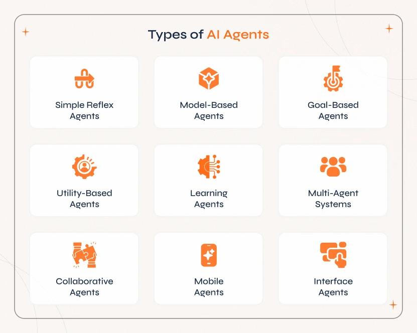
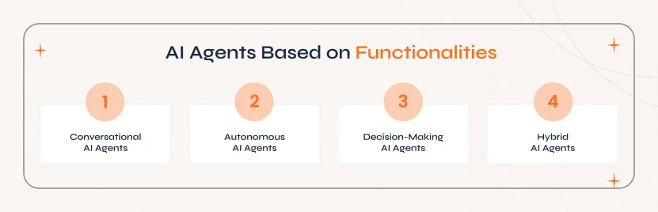
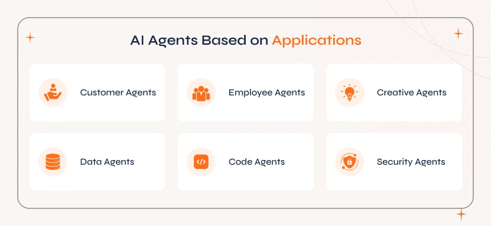
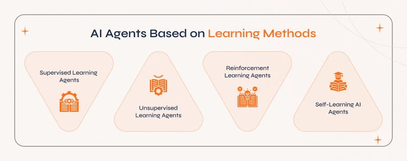
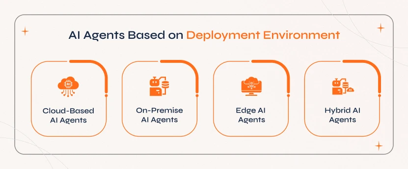
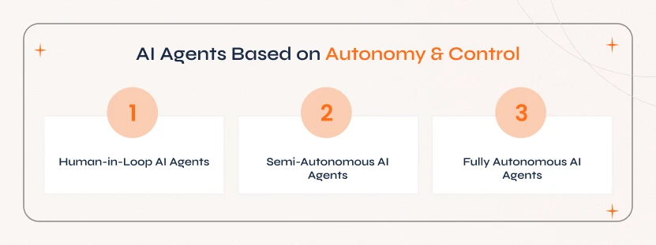
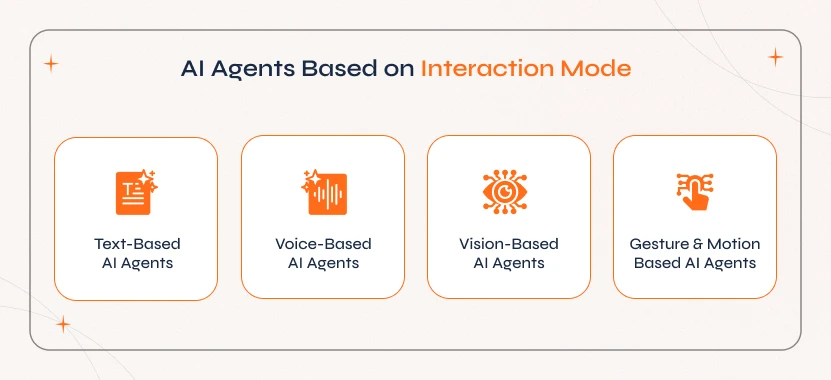
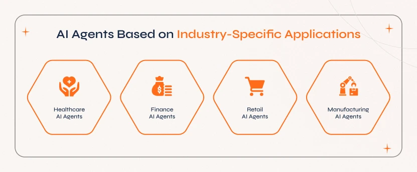
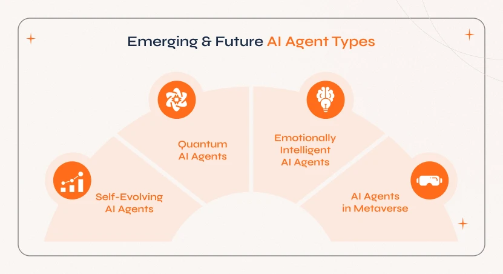

Have you ever wondered how technological innovations you come across everyday, such as chatbot interactions, online suggestions, driverless cars, etc., are functioning? Different types of AI agents are the concept behind these innovations. They are revolutionizing businesses, streamlining operations, and enhancing customer experiences. The AI agents contribute to these advancements, and it is worth noting that not all of them function the same way. i.e., some follow fixed rules while others learn and improve.
From AI-powered assistants that automate customer support to intelligent analytics tools that drive data-driven decisions, these AI agents in business are shaping the future. Whether you are a tech freak or business owner, this blog helps you understand the different types of AI agents, explaining the roles, applications, and how businesses can benefit from them in detail.
What are AI Agents - At a Glance
AI agents are intelligent systems that observe the environment, make data-driven decisions, and take actions to achieve specific goals. These agents can either be software-based (chatbots, recommendation systems, etc.) or physical entities (self-driving cats, autonomous robots, etc).
The AI agents operate through three fundamental processes:
1. Perception - Gathering data from the environment via sensors or data inputs.
2. Decision-Making - They analyze the data and find the best action with the help of predefined rules, machine learning models, or reinforcement learning.
3. Action - These agents execute the chosen action and interact with the environment to achieve the goals.
The AI agents are playing a crucial role in a wide range of industries, helping them improve accuracy, efficiency, and automation.
Types of AI Agents
The following section classifies the AI agents based on different criteria.
1. AI Agents Based on Cognitive Abilities & Learning Approach
Based on cognitive abilities and learning approaches, AI agents range from simple rule-based systems to more complex self-learning models. They are as follows:

a. Simple Reflex Agents
These AI agents rely entirely on the current situation and don't consider past events. They act on pre-defined rules (if-then condition) and respond to the provided inputs.
- Traffic signals respond to real-time traffic conditions by optimizing traffic flow and reducing congestion.
- Thermostats are control systems that turn on or off based on the temperature.
- Spam filters that block emails based on the matching keywords.
Real-Time Statistics:
AI-driven traffic management systems have significantly improved urban traffic flow. McKinsey reports highlighted that AI-driven traffic management systems have reduced travel time by 20% in urban areas.
Source: McKinsey
b. Model-Based Agents
These agents build an internal model of their environment and make decisions based on real-time inputs and historical data.
- Self-driving cars process real-time sensor data and past driving patterns to predict pedestrian movements, avoid obstacles, and make safe driving decisions.
- Industries monitor and optimize production. AI analyses past machine performance to predict failure, adjust operations, and improve efficiency.
Real-Time Statistics:
According to Waymo’s report, its self-driving technology reduced injury-causing crashes by 81% and police-reported crashes by 64% compared to human-driven vehicles.
Source: Waymo
c. Goal-Based Agents
With these AI agents, it is possible to achieve goals by analysing possible actions and future consequences. They will plan, adjust strategies, and make decisions that align with the desired results.
- Drones plan and adjust their flight paths in real-time to ensure timely and safe delivery of packages.
- AI systems analyze market trends and individual investment goals to recommend portfolio adjustments that maximize returns.
- Educational software adapts to individual student progress by setting tailored learning goals and adjusting content to optimize educational outcomes.
Real-Time Statistics:
McKinsey survey reports that 78% of industries have integrated AI in robotics and are using automation to handle at least one of their operations, with service operations being a key area.
Source: McKinsey
d. Utility-Based Agents
These AI agents are designed to analyse and choose actions that maximize a specific utility function that balances multiple factors to achieve the best results.
- Ride-sharing services adjust fares in real-time based on demand, traffic conditions, driver availability, etc., to balance supply and demand effectively.
- Drones find the most efficient delivery routes by analyzing weather, distance, and battery life to ensure timely and cost-efficient service.
Real-Time Statistics:
Uber reports that its surge pricing algorithm has shown to reduce average wait times to approximately 2.6 minutes during high demand, which indicates improved ride availability.
e. Learning Agents
These agents are designed to improve AI systems' performance over time by interacting in real-time and adapting based on experiences.
- Self-driving cars learn from real-world driving data to enhance navigation, adapt to various traffic conditions, and improve safety measures.
- AI-powered language tutors engage users in conversations by providing corrections and feedback to improve their language proficiency.
Real-Time Statistics:
NBC Bay Area reports that Waymo's self-driving technology has reached over 25 million miles on public roads, which has reduced serious collisions compared to human drivers.
Source: NBC Bay Area
f. Multi-Agent Systems (MAS)
It is a collection of multiple AI agents that communicate and collaborate to solve complex problems. These agents work independently or in coordination to achieve shared goals.
- MAS-powered trading bots find market trends and execute trades autonomously while coordinating with other AI agents to mitigate risks.
- Multiple AI agents optimize production lines in manufacturing to adjust machine operations, predict maintenance, and ensure supply chain efficiency.
Real-Time Statistics:
Deloitte reports that firms using MAS in smart manufacturing have witnessed a 30% increase in operational efficiency while optimizing production schedules.
g. Collaborative Agents
These agents work together by sharing information, coordinating tasks, and optimizing collective decision-making to achieve the common goals.
- Multiple AI agents in the supply chain coordinate logistics, inventory, and delivery scheduling.
- Autonomous traffic control systems collaborate to reduce traffic congestion by adjusting signal timings.
- AI agents assist doctors by sharing medical insights and patient data across multiple hospitals.
Real-Time Statistics:
IBM Watson mentioned that its AI-powered supply chain systems improved demand forecasting accuracy by 40% and helped reduce stockouts and excess inventory.
Source: IBM Watson
h. Mobile Agents
As the name suggests, these AI agents move across different network devices or environments and perform tasks. They will operate autonomously and transfer themselves between systems.
- Mobile agents detect and respond to cyber threats by transferring across networks and finding security vulnerabilities.
- AI-powered shopping assistants track user performance across devices to provide custom recommendations.
Real-Time Statistics:
According to Cisco reports, mobile AI agents in cybersecurity have reduced incident response time by 60%, thus enabling faster threat detection and mitigation.
Source: Cisco
i. Interface Agents
These are AI agents that interact with users directly and learn their behaviors to provide personalized assistance. They enhance user experience by making simple interactions with complex systems.
- AI chatbots like ChatGPT assist users with tasks and queries.
- AI-powered support bots analyze customer issues and offer automated responses to reduce response time.
- AI learns user preferences to automate home systems like lighting, security, temperature, etc.
Real-Time Statistics:
Techmonitor.ai revealed Gartner's prediction that AI-powered customer service agents will handle 80% of customer interactions by 2029.
Source: Techmonitor.ai
2. AI Agents Based on Functionalities
This section classifies AI agents based on what role they play and how they help perform different tasks.

a. Conversational AI Agents
These AI agents are developed to engage in human-like interactions and provide customer support, answering queries and automating communication tasks.
- AI-powered chatbots handle customer inquiries and support tickets in businesses.
- Virtual assistants help users set up reminders, search for information, etc.
- Interactive AI tutors provide personalized learning experiences for students.
Real-Time Statistics:
According to Deloitte's report on conversational AI, chatbots currently represent the top use of AI in enterprises, with adoption rates expected to almost double over the next 2-5 years.
Source: Deloitte
b. Autonomous AI Agents
These agents are designed to operate independently, make decisions, and execute tasks without requiring human intervention. They function based on sensors, AI models, and real-time data.
- Self-driving cars use AI to navigate roads, detect obstacles, and follow traffic rules.
- AI-powered warehouse robots are automating inventory management in logistics.
- Autonomous drones are performing surveillance, deliveries, and mapping.
Real-Time Statistics:
According to Financial Times, Amazon's robotic fulfillment centers have reduced operational costs by 25% compared to older warehouses.
Source: Financial Times
c. Decision-Making AI Agents
These agents analyze vast datasets and help businesses make informed decisions that are data-driven. They are involved in predicting trends, finding anomalies, and optimizing strategies.
- AI-driven fraud detection systems monitor transaction details to identify suspicious activity.
- AI-driven business intelligence software provides insights to optimize workflow.
- Financial AI tools predict the market trends and assist with investment strategies.
Real-Time Statistics:
ABA Journal reports that JPMorgan Chase's COiN AI system processes 12000 commercial loan agreements in seconds and saves 360,000 hours of manual operations annually.
Source: ABA Journal
d. Hybrid AI Agents
These are multi-functional AI agents that integrate features from different types of AI agents. They combine conversational, autonomous, and decision-making abilities into one system.
- AI virtual assistants are making conversations while automating scheduling and administrative tasks.
- Smart home systems respond to voice commands while automating home tasks.
- AI chatbots in e-commerce interact with customers while tracking orders, processing refunds, etc.
Real-Time Statistics:
According to CX Today, Gartner predicts highlights that businesses using hybrid AI agents are witnessing a 25% increase in workflow and customer engagement by 2025.
Source: CX Today
3. AI Agents Based on Applications
In this classification, AI agents are categorized based on real-world applications across industries that focus on improving productivity, security, creativity, and customer engagement.

a. Customer Agents
These AI agents handle customer interactions, provide instant support, offer personalized product recommendations, and improve user experiences.
- AI chatbots are handling customer queries in real-time and reducing wait times.
- AI virtual assistants are offering personalized shopping experiences and guided support.
- E-commerce recommendation engines suggest products based on user preferences.
Real-Time Statistics:
Desku reports that by 2025, it's expected that AI will manage 25% of customer service interactions, reflecting a significant increase from previous years.
Source: Desku
b. Employee Agents
These agents help employees by automating administrative tasks, managing scheduling, and enhancing business operations.
- AI-powered HT chatbot answering employee queries related to policies and benefits.
- AI-driven workflow automation tools streamlining repetitive administrative processes.
- Smart scheduling assistants automate meetings and optimize time management.
Real-Time Statistics:
Gartner reports that HR chatbots have reduced employee query resolutions by 60% and improved overall workflow productivity.
Source: Gartner
c. Creative Agents
With these AI agents, content creators and marketers can generate creative content such as text, images, music, and videos. They enhance productivity by automating creative tasks, personalizing content, and enabling new forms of digital expression.
- AI writing assistants are helping businesses scale content creation by generating marketing copy, blog posts, product descriptions, etc.
- AI creates high-quality visuals for branding, ads, and social media, which reduces manual design.
- AI-powered music composition assists musicians and content creators with producing unique soundtracks tailored to different genres.
Real-Time Statistics:
As per Demandsage, AI is fostering creativity in the workplace, with 38% of workers stating that these tools make them more innovative in their roles.
Source: Demandsage
d. Data Agents
These agents are designed to analyze vast amounts of structured and unstructured data to extract insights and help businesses make informed decisions.
- Business intelligence tools powered by AI analyse market trends and optimize operations.
- Financial AI systems evaluate large datasets to find risks and investment opportunities.
- An AI-powered analytics platform detects patterns in customer behavior and finds sales trends.
Real-Time Statistics:
According to Forbes, the evolution of AI agents to fully autonomous systems is helping companies meet data readiness objectives more effectively.
Source: Forbes
e. Code Agents
These are AI-powered tools that assist developers in writing, debugging, and optimizing code. These agents help automate software development while reducing human errors and enhancing productivity.
- AI-powered coding assistants offer coding suggestions.
- AI-based debugging tools find and resolve software errors.
- AI-driven automation helps developers optimize software performance and security.
Real-Time Statistics:
GitHub Blog reports developers using GitHub Copilot code 55% faster and improved productivity.
Source: GitHub Blog
f. Security Agents
These agents are used to monitor cybersecurity threats, prevent fraud, and improve data protection across industries like banking, healthcare, etc.
- AI-driven cybersecurity tools detect and respond to threats in real-time.
- An AI fraud detection system analyzes transaction details and prevents fraud.
- AI-driven security analytics help businesses find and mitigate risks.
Real-Time Statistics:
According to Darktrace, AI detects and responds to cyber threats autonomously in real-time and reduces 92% of security breaches.
Source: Darktrace
Collaborate with our experts for a result-driven solution

4. AI Agents Based on Learning Methods
AI agents classified based on learning models define how they improve and make better decisions over time. With these learning approaches, it is possible to find how AI adapts, optimizes performance, and evolves with respect to the new data and experiences.

a. Supervised Learning Agents
These AI agents learn from labelled datasets where each input is provided with the correct output during training. They help in improving accuracy by recognizing patterns and matching inputs to the right outputs.
- Spam filters learn and identify spam emails based on past labelled data.
- AI systems like Google Photos categorize and tag images based on labelled datasets.
- AI models are monitoring historical financial transactions to find fraud activities.
Real-Time Statistics:
As per Saasworthy reports, in the healthcare sector, machine learning applications, such as predictive analytics powered by supervised learning agents, are experiencing annual growth exceeding 40%.
Source: Saasworthy
b. Unsupervised Learning Agents
Unsupervised learning agents do not rely on human-annotated examples to learn. i.e., they analyze data without predefined labels and autonomously identify patterns, trends, and connectivity within the data.
- With the help of AI, Businesses group customers based on purchase history, browsing habits, and engagement levels.
- E-commerce websites categorize shoppers and make personalized product recommendations.
- Companies create tailor-made marketing strategies to target the right set of users base.
Real-Time Statistics:
Growthsetting reported that an unsupervised learning agent powers Netflix's AI recommendation engine and has improved user engagement by 80% while reducing content discovery time.
Source: Growthsetting
c. Reinforcement Learning Agents
These are AI agents that learn through trial and error, which receive rewards for right actions while incurring penalties for mistakes. They keep optimizing strategies for accurate decision-making.
- AI in robotics improves movement and coordination through reinforcement learning.
- AI refines driving behaviors by learning from real-world road conditions and simulations.
Real-Time Statistics:
As per Waymo, its AI-driven self-driving cars trained with reinforcement learning have covered over 22 million miles in real-world conditions and are reducing accident rates compared to human drivers.
Source: Waymo
d. Self-Learning AI Agents
These are advanced AI agents that improve on their own without relying on external training data. They adapt from real-world interactions, refine their decision-making, and optimize performance without human intervention.
- AI in personal assistants improves responses by analysing past user interactions and refining their language models.
- AI dynamically adjusts pricing in e-commerce or ride-sharing services based on real-time demand and competition.
- AI systems in manufacturing units monitor machines and predict failures before they occur.
Real-Time Statistics:
The Australian mentioned that a Deloitte survey revealed that within the first three months of 2024, 25% of businesses tested agentic AI technologies, and 50% plan to initiate AI pilots by 2027. This clearly marks the swift integration of self-learning AI agents in business operations
Source: The Australian
5. AI Agents Based on Deployment Environment
AI agents can be classified based on the environment it is operating in, considering factors like performance, accessibility, data processing speed, and security. The classification below determines the sustainability and efficiency of the AI agents for different use cases.

a. Cloud-Based AI Agents
As the name suggests, these AI agents work on cloud platforms using remote servers to store, compute, and process real-time data. They are known for the scalability and accessibility features.
- Cloud-hosted AI chatbots and virtual assistants offer smooth conversational experiences across devices.
- AI-powered analytics platform helping businesses extract valuable data from huge datasets.
- AI-enhanced SaaS platforms leverage cloud computing to automate, engage with customers, and make decisions.
Real-Time Statistics:
As per Gartner predictions, 33% of enterprise software applications will incorporate agentic AI by 2028, up from less than 1% in 2024, enabling 15% of day-to-day work decisions to be made autonomously
Source: Gartner
b. On-Premise AI Agents
These are AI agents that work within the local infrastructure of an organization. They offer enhanced security, data privacy, and compliance with industry standards.
- Hospitals are using on-premise AI to process medical records while maintaining strict data privacy.
- Manufacturing plants embed AI on their private network to optimize production.
Real-Time Statistics:
Spiceworks states According to IBM Security Reports, on-premise AI reduces data breach risks by 65.2% and is most preferred by industries with strict regulatory requirements.
Source: Spiceworks
c. Edge AI Agents
These AI agents process data locally on edge devices like smartphones, IoT, or autonomous machines to reduce dependency on cloud computing. This enhances processing speed, lowers latency, and enables real-time decision-making.
- Self-driving autonomous cars use the sensor data in real-time to commute safely without using cloud connectivity.
- Facial recognition in smart cameras analysing data on-device, enhancing privacy and speed.
- Smartwatches and fitness trackers analyze heart rate without sending information to external servers.
Real-Time Statistics:
Accenture surveyed 2,100 C-level executives in 18 industries across 16 countries to understand levels of edge interest and adoption among companies. They found that 83% believe that edge computing will be essential to remaining competitive in the future.
Source: Accenture
d. Hybrid AI Agents
It is a combination of cloud, on-premise, and edge AI agents that is capable of optimizing performance, efficiency, and security. This helps balance real-time processing with long-term data storage and analysis.
- Traffic monitoring systems using edge AI for real-time detection and cloud AI for long-term pattern analysis.
- Drones process real-time navigation locally while sync with cloud AI for processing larger datasets.
Real-Time Statistics:
Business Insider highlighted that a report by Forum Ventures showed 63% of executives are employing a hybrid approach combining in-house AI models with third-party solutions to maintain control while leveraging external innovations
Source: Business Insider
6. AI Agents Based on Autonomy & Control
AI agents can be grouped on the basis of how independently they work and much level of human oversight is required. This implies how much control they have in decision-making and performing actions.

a. Human-in-Loop AI Agents
These AI agents require human supervision and approval when it comes to critical decisions. Rather than replacing human decision-making, these agents assist in ensuring safety, accuracy, and compliance.
- AI-assisted medical diagnosis suggests diagnosing while doctors make the final decisions.
- AI in legal research helps analyze case laws while lawyers draw legal conclusions.
- AI in military defense systems detects threats, but humans approve responses.
Real-Time Statistics:
As per The Lancet reports, cancer detection rates are increased by 20% with the help of AI-assisted radiology systems while human radiologists play a crucial role in diagnosis.
b. Semi-Autonomous AI Agents
These agents can make a few decisions independently while requiring human intervention for complex and high-risk tasks. They work in such a way to balance automation with human expertise.
- AI-driven marketing automation offering personalized marketing campaigns while marketers check the creative direction and brand alignment.
- Autonomous Robots in warehouse managing inventory and order fulfillment, but human agents supervise operational strategy.
Real-Time Statistics:
As per SellersCommerce, AI agents are expected to automate between 15% to 50% of business tasks by 2027, contributing to increased efficiency and accelerated growth
Source: SellersCommerce
c. Fully Autonomous AI Agents
These are AI agents that operate without requiring any human intervention. They make decisions independently and handle tasks based on their programming and learning models.
- Autonomous vehicles navigate on roads, detecting obstacles and making real-time driving decisions without humans.
- AI-powered robots in manufacturing units handle production, quality control, and logistics without human intervention.
- AI in smart grid management automatically regulates electricity distribution, predicts demands, and optimizes power supply.
Real-Time Statistics:
According to The Australian, 50% of businesses plan to launch AI pilots, indicating a significant upward trend in autonomous AI agent adoption by 2027.
Source: The Australian
7. AI Agents Based on Interaction Mode
AI agents can be classified based on how they communicate and interact with humans or other systems. These agents rely on images, text, music, video, etc., to understand commands, respond to users, and automate tasks.

a. Text-Based AI Agents
These AI agents interact through written text and use NLP to process and respond to the user inputs.
- AI chatbots handle inquiries and thereby reduce human agents to provide support.
- E-commerce assistants provide product recommendations and assist customers with the purchasing process.
- AI in legal tech drafting contracts and scanning documents for insights.
Real-Time Statistics:
As per the Masterofcode survey, about 62% of respondents prefer to use customer service digital assistants rather than waiting for human agents.
Source: Masterofcode
b. Voice-Based AI Agents
These are AI agents that process spoken language through speech recognition and NLP. Thus, they enable hands-free interactions.
- Virtual assistants like Siri, Alexa, and Google Assistant are performing tasks and answering questions.
- Voice AI in healthcare offers voice-based diagnostics and virtual consultations.
- Smart home controls like thermostats, lights, etc., operate under voice commands.
Real-Time Statistics:
Backlinko report states that approximately 98 million people in the US own a smart speaker.
Source: Backlinko
c. Vision-Based AI Agents
These agents analyze visual data from images, video, and real-world environments to interpret and respond intelligently.
- Facial recognition identifies individuals and enhances security systems.
- Medical imaging assists in diagnosing diseases by analysing medical scans.
- An AI-powered traffic monitoring system optimizes city traffic flow with the help of real-time visual data.
Real-Time Statistics:
Huddlecreative mentioned that 4.2 billion voice assistants are in use globally as of 2025.
Source: Huddlecreative
d. Gesture & Motion-Based AI Agents
These are AI agents that interpret human gestures and movements to enable touchless interactions.
- Gaming devices enable players to control games via body movements.
- AR and VR are enhancing user experiences by allowing interactions through gestures.
- AI in automotive safety using hand gestures to control in-car functions like navigation, music control, etc.
Real-Time Statistics:
While there are no specific statistics available, the increasing integration of AI in gaming and AR/VR apps shows a growing trend in using these modes.
8. AI Agents Based on Industry-Specific Applications
AI agents are used across industries to automate tasks, enhance efficiency, and make data-driven decisions. Below are the industry-specific AI agents along with use-cases.

a. Healthcare AI Agents
These are AI agents that assist medical professionals in diagnosing diseases, providing treatment support, and accelerating medical research.
- AI tools analyse patient data and help in finding the condition.
- AI chatbots virtually reduced unnecessary hospital visits by providing preliminary diagnoses and health advice.
Real-Time Statistics:
As per Tateeda Global reports, AI applications have improved the detection of cancer at an early stage with a 40% increase in the rate and thereby enhanced patient outcomes through timely intervention.
Source: Tateeda Global
b. Finance AI Agents
These AI agents analyze the market trends, automate trading, detect fraud, and enhance customer engagement.
- AI-driven trading systems handle trades based on real-time market analysis and optimize investment strategies.
- AI-powered robo advisors offer personalized investment advice based on individual financial goals and risk tolerance.
Real-Time Statistics:
According to Financial Times, a survey showed 1/3rd of Gen Z investors began investing in capital markets during university years with the influence of AI-driven investment tools and financial content.
Source: Financial Times
c. Retail AI Agents
These are AI agents that can optimize pricing strategies, manage inventory, and improve customer recommendations.
- AI systems adjust product prices in real-time based on demand, competition, and market conditions.
- AI finds the demand patterns and helps retailers maintain optimal stock levels and reduce waste.
- AI-powered recommendation engines provide tailored recommendations that meet customer preferences and increase sales.
Real-Time Statistics:
As per McKinsey, companies that offered more personalization generated 40% more revenue compared to those that handled an average sales strategy.
Source: McKinsey
d. Manufacturing AI Agents
With these AI Agents, it is possible to predict maintenance needs for the machine in manufacturing units, optimize supply chain logistics, and improve production efficiency.
- AI models monitor machinery performance to predict failure before it occurs and minimize downtime.
- AI analysis data to streamline inventory management and logistics, which reduces costs while improving delivery times.
Real-Time Statistics:
As per Barron's, AI-powered chatbots contribute to a 1800% surge in retail site traffic, boosting customer engagement and streamlining purchases.
9. Emerging & Future AI Agent Types
These are AI agent types developed to revolutionize various sectors by advancing beyond today's technology.

a. Self-Evolving AI Agents
These agents are developed to autonomously modify their own architecture and algorithms in such a way that they can optimize their performance based on continuous learning and feedback.
- AI agents are rewriting and improving their own codebase in autonomous software development to enhance efficiency and adapt to new tasks without human intervention.
- Robots that adjust their control algorithms in real-time to perform tasks better in dynamic environments.
Real-Time Statistics:
Medium reports that the AI agents market is all set to grow upto $47.1 billion by 2030, which significantly indicates the increase in adoption of advanced AI systems.
Source: Medium
b. Quantum AI Agents
These agents leverage the principles of quantum computing and process the information in ways that a classical computer cannot perform. This way, they provide efficient resolution for the highly complex problems.
- AI in drug discovery simulates molecules to develop new medicines at a faster pace.
- In cybersecurity, AI creates stronger cryptographic encryption and protects sensitive user data.
Real-Time Statistics:
As per the reports of Nature, Quantinuum & JPMorgan Chase created a quantum-powered encryption system to make data more secure.
Source: Nature
c. Emotionally Intelligent AI Agents
These agents are built to detect, interpret, and respond to human emotions and thus enable more natural interactions.
- Mental health apps offer necessary support by finding users' emotional states.
- Virtual assistants adjust their response with respect to the customer's emotion to improve service quality.
Real-Time Statistics:
According to Worldhealthexpo, Limbic Access, an AI chatbot, helps therapists detect emotional distress with 93% accuracy.
Source: Worldhealthexpo
d. AI Agents in Metaverse
These are digital entities designed to interact within virtual worlds and enhance user experience in an immersive environment.
- AI-driven VR avatars engage with users in realistic and context-aware manners within virtual spaces.
- Game characters powered by AI exhibit complex behaviors and adapt to players' actions to make gaming experiences more engaging.
Real-Time Statistics:
According to The Verge, Nvidia's AI "ACE" characters can now perform and make decisions on their own, just like human players.
Source: The Verge
How to Choose the Right AI Agent?
Choosing the right AI agent varies based on factors such as the level of autonomy required, the problem that needs to be solved, and the necessary tech capabilities. Whether you want to automate tasks, enhance user engagement, or optimize decision-making, here is how to choose the right AI agent for your business:
Define the problem you want to solve with the help of AI. You also need to set goals—whether it is to automate customer support, optimize operations, or improve decision-making.
AI agents differ in complexity and functionality, ranging from simple rule-based systems to advanced learning models. Selecting the right AI agent depends on whether it needs to follow fixed rules, adapt to past experiences, make strategic decisions, continuously learn and improve, or anything in between. By understanding these differences, it becomes easier to choose the AI agent that aligns with your business goals.
The AI agent functions based on the required technologies. Choosing Machine Learning enables predictions and analytics, NLP (Natural Language Processing) works for chatbots and virtual assistants, while Computer Vision supports image recognition. Quantum Computing makes solving complex problems in finance and security more efficient.
AI agents require real-time data processing or access to high-quality datasets. Additionally, businesses must determine whether cloud-based AI or on-device processing is suitable for their operations.
A reliable AI agent should grow with the business and seamlessly integrate with existing tools like CRM, ERP, and cloud services.
It is vital to decide between **pre-built AI agents**, which offer quick deployment at a lower cost, and **custom AI agents**, which provide tailored functionalities but require a higher investment for development, deployment, and maintenance.
A reliable AI agent should grow with the business and seamlessly integrate with existing tools like CRM, ERP, and cloud services.
Want to Choose the Right AI Agent?
Get expert guidance to choose the right AI agent
The Future of AI Agents - Key Trends and Breakthroughs
AI agents are evolving with cutting-edge technologies such as Generative AI involved in generating creative and human-like content, Reinforcement Learning where AI agents learn through trial-and-error, and Quantum Computing that leverages quantum computing to solve problems faster and processes vast datasets efficiently.
Besides this, AI agents are actively integrated into
1. Web3 decentralized applications and smart contracts.
2. Managing IoT and connected devices for smart homes, healthcare, and factories.
3. Businesses to automating complex workflows, reducing costs and boosting productivity.
Why Consult Sparkout Tech to Build AI Agents?
Businesses looking forward to developing AI-powered solutions can partner with Sparkout Tech to build high-performance, scalable, and cost-effective AI agents. Here is why Sparkout Tech is the right choice to build AI agents for your business:
1. Sparkout Tech specializes in AI-driven automation, chatbot development, and advanced machine learning solutions, thus ensuring businesses get AI agents tailored to their needs.
2. AI agent development can be expensive, but Sparkout Tech focuses on optimizing the development costs by leveraging the latest frameworks, pre-trained models, cloud-based AI solutions, etc.
3. Sparkout Tech offers end-to-end development support from initial consultation to AI agent training, deployment, and ongoing maintenance.
4. With proven success stories, Sparkout Tech ensures to deliver high-performance AI agents across industries and help businesses automate operations and enhance customer experiences.
Yokesh Sankar, COO at SparkoutTech